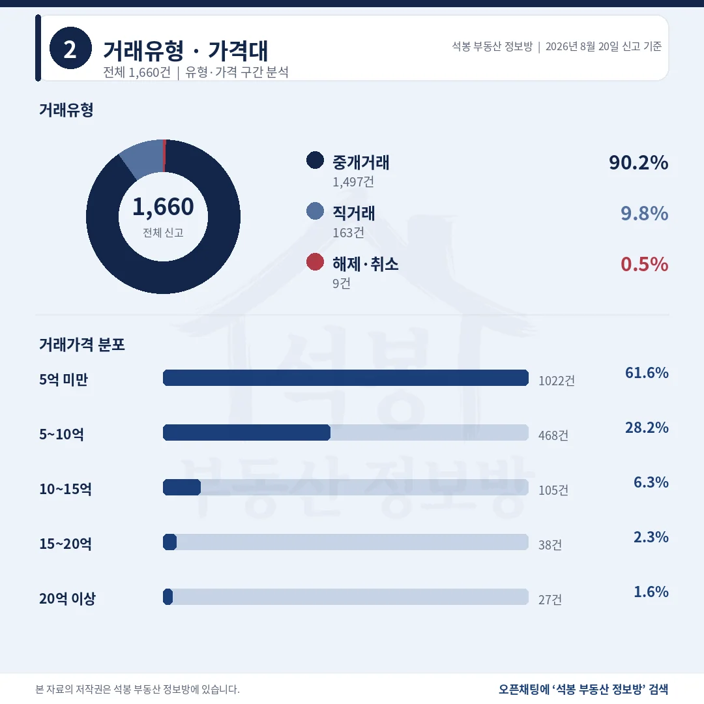
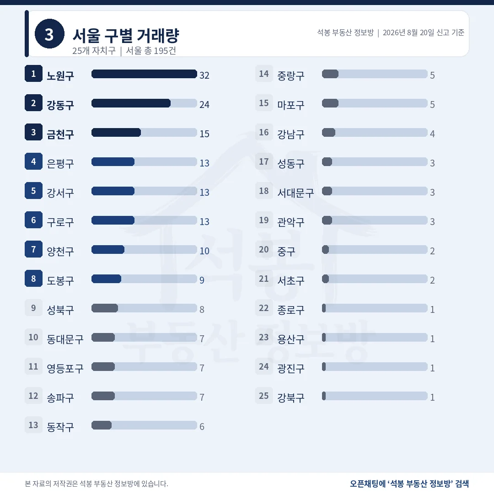
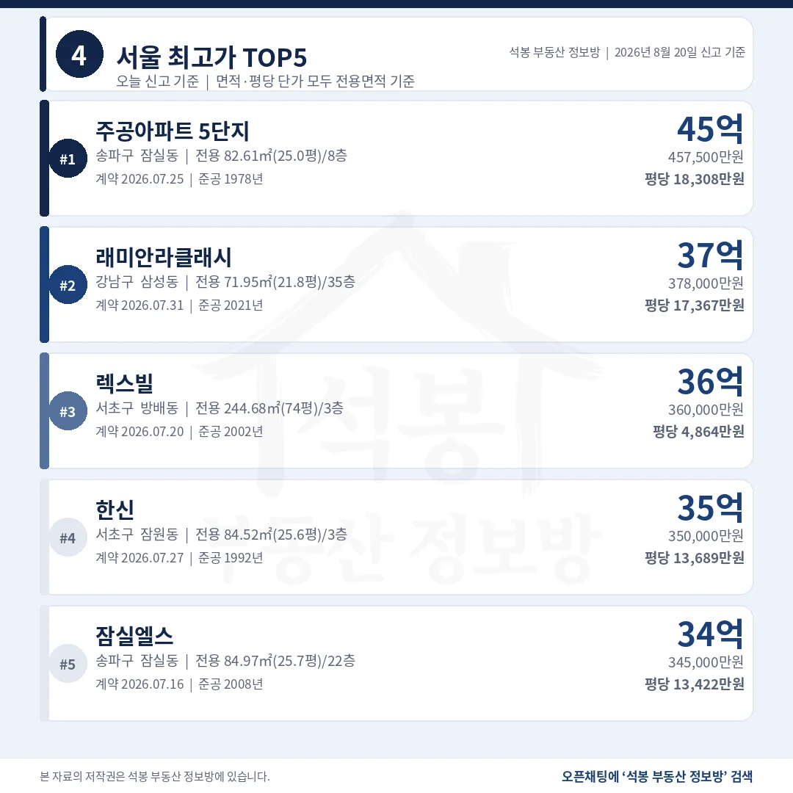
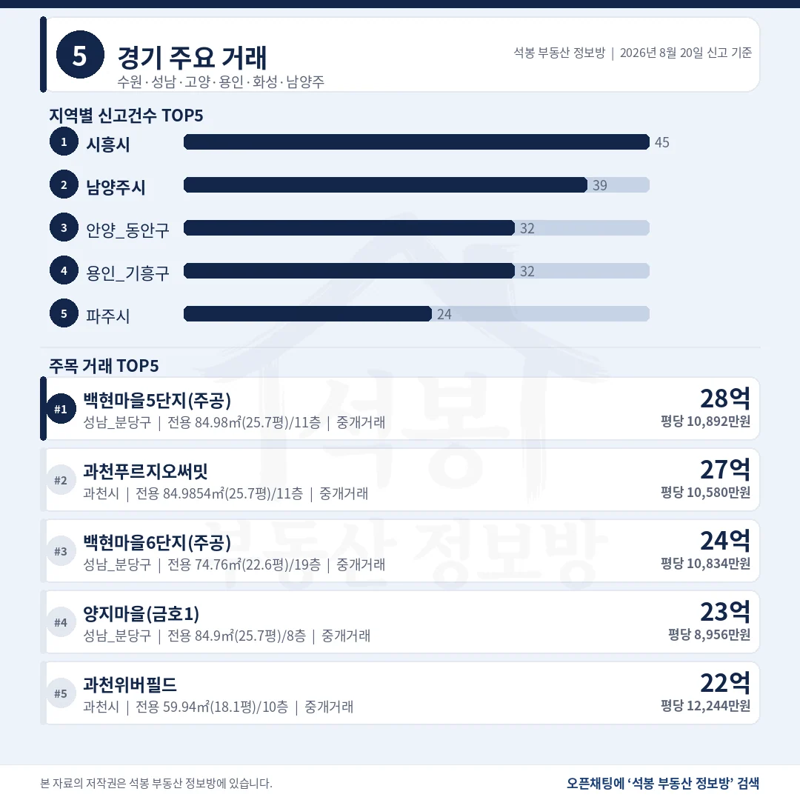
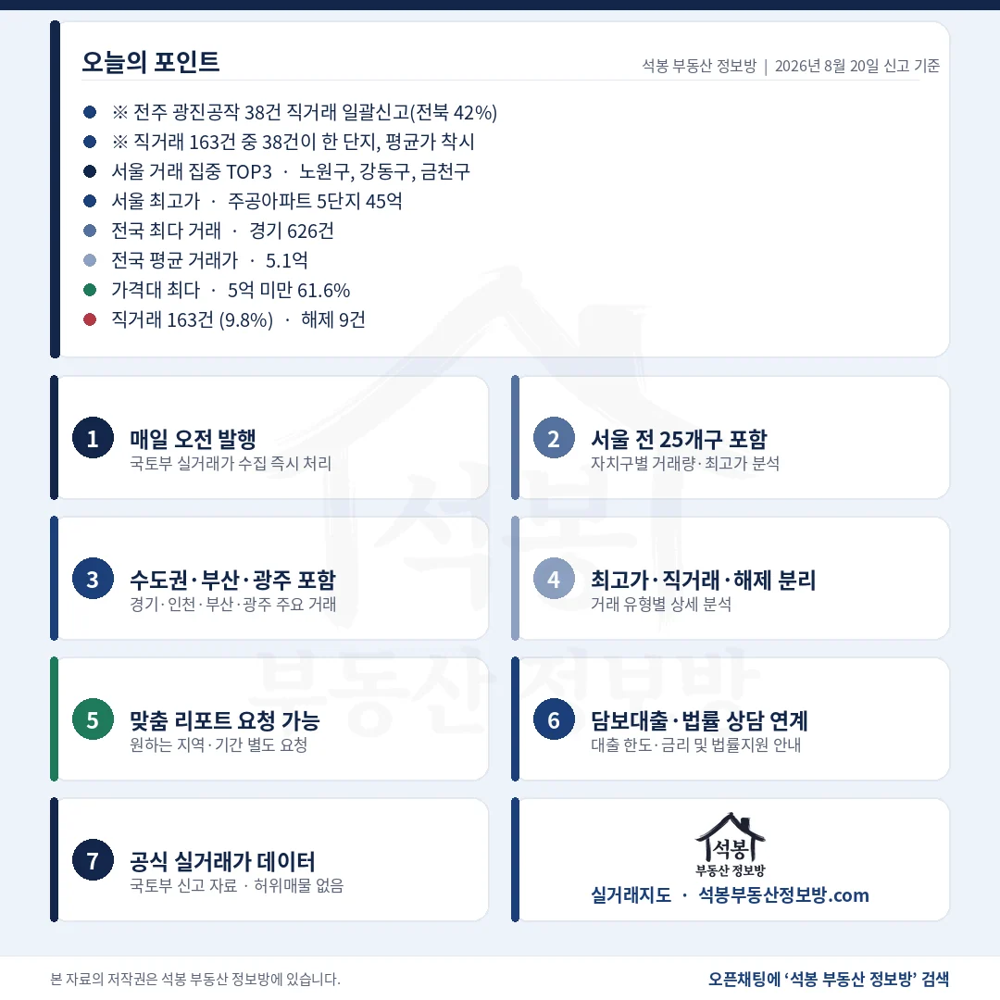

8월 20일 아파트 실거래 신고는 1,660건입니다. 열 건 중 여섯 건이 5억 아래에서 이뤄졌고, 20억을 넘긴 거래는 27건이었습니다. 서울 195건 가운데 노원구가 32건으로 가장 많았는데 강남·서초·송파를 다 합친 13건의 2.5배입니다. 8월 19일 신고분 3,109건은 연휴 나흘치 합산이라 비교에서 뺐습니다.
단지명을 누르면 그 단지의 실거래 내역과 시세를 바로 볼 수 있습니다. (면적과 평당 단가는 모두 전용면적 기준)
5억 미만 61.6%, 직거래 163건 중 38건이 한 단지

거래유형·가격대
직거래가 9.8%까지 올라왔지만, 넷 중 하나는 한 단지에서 나온 몫입니다.
거래유형
건수
비중
중개거래
1,497건
90.2%
직거래
163건
9.8%
해제·취소
9건
0.5%
38건이 전주 완산구 광진공작 한 곳, 계약일도 8월 16일 하루입니다. 빼면 직거래는 7.7%입니다.
가격대
건수
비중
5억 미만
1,022건
61.6%
5~10억
468건
28.2%
10~15억
105건
6.3%
15~20억
38건
2.3%
20억 이상
27건
1.6%
전국 평균 5.13억, 중위 3.97억으로 1.16억 벌어져 있습니다.
여기서부터는 회원에게 보여드립니다
카카오 로그인 3초면 전문을 읽을 수 있습니다. 무료입니다.
가입하시면 지역 시장조사 보고서(약식)를 2회 무료로 요청하실 수 있습니다.
이미 회원이면 같은 버튼으로 로그인만 됩니다
경기 626건에 서울 195건, 수도권이 55.4%

서울 구별 거래량
경기 한 곳이 전국의 37.7%를 가져갔습니다.
시도
신고
시도
신고
경기
626건
부산
78건
서울
195건
경북
70건
인천
98건
충남
69건
경남
97건
대전
62건
전북
91건
전남
47건
경기 626건은 시흥 45건, 남양주 39건, 안양 동안구와 용인 기흥구 각 32건 순이었습니다.
서울 자치구
신고
비고
노원구
32건
상계 11 · 공릉 10 · 월계 7 쏠림 없음 (중위 6.20억)
강동구
24건
둔촌·강일 각 4건 중위 15.05억
금천구
15건
관악산벽산타운5 6건 중위 5.80억
은평·강서·구로
각 13건
중위 9.90 / 8.70 / 7.50억
강남·서초·송파
합 13건
송파 7 · 강남 4 · 서초 2 중위 29.5억
서울 전체 중위 8.65억. 노원구 32건은 세 개 동으로 흩어져 쏠림이 없습니다.
서울 최고가 잠실 주공5단지 45.75억, 평당 18,308만원

서울 최고가 TOP5
다섯 건 모두 7월 계약이 이제 신고됐습니다.
단지
위치
거래가
전용면적
평당(전용)
1 주공아파트 5단지
송파 잠실동
45.75억
82.6㎡ (25.0평)
18,308만 1978년
2 래미안 라클래시
강남 삼성동
37.8억
72.0㎡ (21.8평)
17,367만 2021년
3 렉스빌
서초 방배동
36.0억
244.7㎡ (74.0평)
4,864만 2002년
4 한신
서초 잠원동
35.0억
84.5㎡ (25.6평)
13,689만 1992년
5 잠실엘스
송파 잠실동
34.5억
85.0㎡ (25.7평)
13,422만 2008년
1위 주공5단지는 1978년 준공이라 45.75억에는 집값보다 대지 지분 값이 큽니다. 3위 렉스빌은 74평 대형이라 평당이 가장 낮습니다.
대전 둔산동 21.8억, 20억대 27건 중 유일한 비수도권

경기/인천/부산/광주
지역별 상단은 경기 28.0억, 대전 21.8억 순입니다.
지역
신고
최고가 단지
거래가
평당(전용)
경기
626건
성남 분당 백현동 백현마을5단지(주공)
28.0억
10,892만
대전
62건
서구 둔산동 크로바
21.8억
5,342만
대구
40건
수성 범어동 두산위브더제니스
17.9억
4,586만
부산
78건
남구 대연동 대연힐스테이트푸르지오
14.5억
4,056만
인천
98건
연수 송도동 송도푸르지오하버뷰
13.8억
2,811만
대전 상단은 크로바 전용 134.9㎡(40.8평) 21.8억(8월 6일 계약)입니다. 경기 1위 백현마을5단지(주공)는 전용 85.0㎡(25.7평) 28.0억으로, 서울 밖에서 평당 1억을 넘긴 다섯 건 중 총액이 가장 컸습니다.
노원 중위 6.2억, 강남3구 13건의 중위는 29.5억

구간
서울
경기
그 밖
20억 이상 27건
21건
5건 (분당 3 · 과천 2)
대전 1건
15억 이상 65건
43건
20건
대구·대전 각 1건
같은 서울인데 구별로 이렇게 갈립니다. 노원구는 32건이 신고됐지만 중위가 6.2억이고, 열 건에 그친 양천구는 16.6억이었습니다. 강남·서초·송파를 다 합쳐도 13건뿐인데 중위는 29.5억입니다. 건수와 금액 중 하나만 보면 그날 시장을 반대로 읽게 됩니다.
20억을 넘긴 27건은 서울 21, 경기 5(분당 3·과천 2), 대전 1건이었습니다. 수도권 밖에서 나온 20억대는 그 한 건뿐입니다. 서울 안에서도 양천·송파·강동이 각 4건으로 강남구 2건, 서초구 2건보다 많았습니다. 하루 표본이라 단정하기는 이릅니다.
표 보는 법 · 직거래는 중개사를 끼지 않고 당사자끼리 한 거래입니다. 면적과 평당 단가는 모두 전용면적 기준이고, 평은 ㎡를 3.3058로 나눈 값입니다. 중위 거래가는 그 지역 거래를 금액순으로 줄 세웠을 때 한가운데 값이라 평균보다 체감에 가깝습니다. 건수와 비중은 해제·취소를 포함한 전체 신고 기준이고, 중위와 평균은 해제 9건을 빼고 계산했습니다.
원자료: 국토교통부 실거래가 공개시스템 (2026년 8월 20일 신고분 기준) · 편집·제작: 석봉 부동산 정보방 · 신고분은 계약일과 신고일이 다를 수 있으며 해제·취소 건이 뒤늦게 반영될 수 있습니다 · 본 자료는 정보 제공 목적이며 투자 권유가 아닙니다.